청소년상담사-2급(2교시) (2022-10-08 기출문제)
1과목: 진로상담
1. 청소년 진로상담의 목표로 옳지 않은 것은?
- 일과 직업세계의 이해 증진
- 정보탐색 및 활용능력의 증진
- 일과 직업에 대한 올바른 가치관 및 태도 형성
- 직업전환 탐색
- 합리적인 의사결정능력의 증진
(정답률: 알수없음)

2. 진로상담이론과 주요 개념의 연결이 옳은 것을 모두 고른 것은?
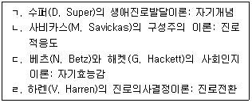
- ㄱ, ㄴ
- ㄴ, ㄷ
- ㄱ, ㄴ, ㄷ
- ㄱ, ㄷ, ㄹ
- ㄱ, ㄴ, ㄷ, ㄹ
(정답률: 알수없음)
3. 홀랜드(J. Holland) 성격이론의 핵심개념에 관한 설명으로 옳지 않은 것은?
- 일관성: 성격유형과 환경모형 간의 관련 정도를 의미한다.
- 변별성: 유형간의 상대적 중요도의 관계를 의미한다.
- 정체성: 환경적 정체성은 환경이나 조직이 분명하고 통합된 목표, 일, 보상이 일관되게 주어질 때 생긴다.
- 계측성: 육각형 내에서 유형들 간의 거리는 그들의 이론적 관계에 반비례한다.
- 일치성: 육각형모형에서 흥미유형 또는 직업 환경 간의 거리는 그들의 이론적 관계와 비례한다.
(정답률: 알수없음)
4. 로(A. Roe)의 욕구이론에 관한 설명으로 옳지 않은 것은?
- 매슬로우(A. Maslow) 이론의 영향을 받았다.
- 서비스직, 비즈니스직, 단체직, 기술직 등을 포함하여 흥미에 기초한 6가지 직업군을 제안하였다.
- 성격과 직업분류를 통합하였다.
- 아동기의 경험 중 부모-자녀 관계는 직업선택에 중요한 영향을 미치는 요인으로 간주하였다.
- 부모와 자녀 간의 상호작용은 정서집중형, 회피형, 수용형으로 구분하였다.
(정답률: 알수없음)
5. 다음 반두라(A. Bandura)의 사회학습이론에서 설명하는 개념은?
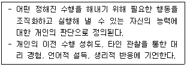
- 자기조절
- 자기효능감
- 자기개념
- 자기발달
- 자기진로적응
(정답률: 알수없음)
6. 윌리암슨(E. Williamson)의 진로상담 과정에서 예측단계에 관한 설명으로 옳은 것은?
- 태도, 흥미, 가족배경, 지식, 학교 성적 등에 대한 세부적인 자료들을 수집한다.
- 내담자의 독특성 또는 개별성을 탐지하기 위하여 사례연구나 검사결과에 의해서 자료를 수집하고 요약한다.
- 내담자의 특성과 문제를 분류하고, 교육적ㆍ직업적 능력과 특성을 비교하여 문제의 원인을 찾아낸다.
- 조정가능성 및 문제의 가능한 결과를 판단하고, 이를 통해 내담자가 고려해야 할 대안적 조치들과 조정사항들을 찾는다.
- 새로운 문제가 발생되었을 때 내담자가 바람직한 행동계획을 수행할 수 있도록 돕는다.
(정답률: 알수없음)
7. 수퍼(D. Super)의 생애진로발달이론에서 보유(holding), 갱신(updating), 혁신(innovating) 발달과업을 수행하는 단계는?
- 성장기(growth stage)
- 탐색기(exploration stage)
- 확립기(establishment stage)
- 유지기(maintenance stage)
- 쇠퇴기(disengagement stage)
(정답률: 알수없음)
8. 갓프레드슨(L. Gottfredson)의 제한ㆍ타협이론에서 다음이 설명하고 있는 진로포부 발달 단계는?
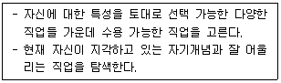
- 규모와 힘 지향 단계
- 성역할 지향 단계
- 사회적 가치 지향 단계
- 내적이며 고유한 자기 경향 단계
- 자기조절 단계
(정답률: 알수없음)
9. 미러바일(R. Mirabile)의 퇴직자를 위한 카운슬링모델에서 다음이 설명하는 단계는?
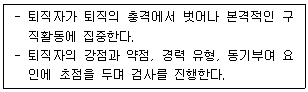
- 1단계 – 평안(comfort)
- 1단계 – 방향(direction)
- 2단계 – 성찰(reflection)
- 2단계 – 명확화(clarification)
- 3단계 - 관점 전환(perspective shift)
(정답률: 알수없음)
10. 직업적응이론에서 다위스(R. Dawis)와 롭퀴스트(L. Lofquist)가 제안한 미네소타 중요도 질문의 가치요인에 해당하지 않는 것은?
- 성취
- 욕구
- 지위
- 안정
- 이타성
(정답률: 알수없음)
11. 사비카스(M. Savickas)는 진로적응도가 발휘되는 장면에 필요한 자원과 전략을 네 가지 차원으로 구분하였다. 적응 차원과 개입 질문의 연결이 옳은 것을 모두 고른 것은?
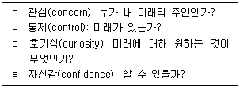
- ㄱ, ㄴ
- ㄷ, ㄹ
- ㄱ, ㄴ, ㄷ
- ㄴ, ㄷ, ㄹ
- ㄱ, ㄴ, ㄷ, ㄹ
(정답률: 알수없음)
12. 미첼 등(T. Mitchell et al.)이 제시한 우연이론의 과제접근 기술에 해당하지 않는 것은?
- 객관성
- 호기심
- 유연성
- 낙관성
- 위험감수성
(정답률: 알수없음)
13. 사회인지 진로이론에 관한 설명으로 옳은 것을 모두 고른 것은?
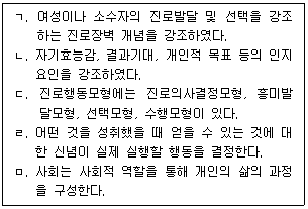
- ㄱ, ㄴ, ㄹ
- ㄱ, ㄷ, ㄹ
- ㄴ, ㄷ, ㅁ
- ㄱ, ㄴ, ㄷ, ㄹ
- ㄴ, ㄷ, ㄹ, ㅁ
(정답률: 알수없음)
14. 다음은 피터슨(G. Peterson), 샘슨(J. Sampson), 리어든(R. Reardon)의 인지적 정보처리 접근 모형이다. ( )에 들어갈 내용으로 옳은 것은?
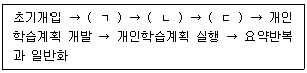
- ㄱ: 예비평가, ㄴ: 문제규정과 원인분석, ㄷ: 목표설정
- ㄱ: 예비평가, ㄴ: 목표설정, ㄷ: 문제규정과 원인분석
- ㄱ: 목표설정, ㄴ: 예비평가, ㄷ: 문제규정과 원인분석
- ㄱ: 목표설정, ㄴ: 문제규정과 원인분석, ㄷ: 예비평가
- ㄱ: 문제규정과 원인분석, ㄴ: 목표설정, ㄷ: 예비평가
(정답률: 알수없음)
15. 윌리암슨(E. Williamson)의 특성요인 진로상담과정에서 상담자의 주도적인 역할이 요구되는 단계를 모두 고른 것은?
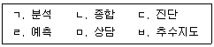
- ㄱ, ㄴ, ㄷ, ㄹ
- ㄱ, ㄴ, ㄷ, ㅁ
- ㄴ, ㄷ, ㄹ, ㅁ
- ㄴ, ㄹ, ㅁ, ㅂ
- ㄷ, ㄹ, ㅁ, ㅂ
(정답률: 알수없음)
16. 샘슨 등(J. Sampson et al.)이 진로욕구의 성격에 따라 분류한 우유부단형 내담자에게 설정할 수 있는 상담과제로 옳지 않은 것은?
- 동기를 개발하는 일
- 자존감을 회복하는 일
- 결정된 진로를 준비하는 일
- 가족 갈등을 해소하는 일
- 자아정체감을 형성시키는 일
(정답률: 알수없음)
17. 상담자가 다음 질문을 적용하는 진로상담기법은?
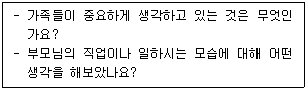
- 삶의 장
- 성공경험
- 진로가계도
- 진로자서전
- 커리어-오-그램
(정답률: 알수없음)
18. 진로심리검사에 관한 설명으로 옳지 않은 것은?
- 적성분류검사(Differential Aptitude Test: DAT)는 일반적성검사와 특수적성검사가 있다.
- 진로발달검사(Career Development Inventory: CDI)는 학교적응, 전공선택, 직업선택을 측정한다.
- 진로의사결정수준검사(Assessment of Career Decision Making: ACDM)는 합리적, 직관적, 의존적 유형을 측정한다.
- 진로성숙도검사(Career Maturity Inventory: CMI)는 진로계획 태도와 능력을 측정한다.
- 스트롱 흥미검사(Strong Interest Inventory: SII)는 좋아함-무관심-싫어함 정도를 파악하여 직업군에 대한 흥미 형태를 결정한다.
(정답률: 알수없음)
19. 다음이 설명하는 검사도구 신뢰도의 추정방법은?
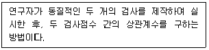
- 동형검사신뢰도
- 반분신뢰도
- 문항내적합치도
- 재검사신뢰도
- 구성신뢰도
(정답률: 알수없음)
20. 진로정보의 평가 기준으로 옳은 것을 모두 고른 것은?
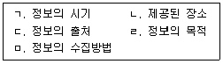
- ㄱ, ㄴ
- ㄴ, ㄷ, ㄹ
- ㄷ, ㄹ, ㅁ
- ㄱ, ㄴ, ㄷ, ㄹ
- ㄱ, ㄴ, ㄷ, ㄹ, ㅁ
(정답률: 알수없음)
21. 청소년이 학교 내외에서 교과와 비교과 활동에 따른 성취과정을 중심으로 한 포트폴리오 유형은?
- 연구 포트폴리오
- 교수 포트폴리오
- 진로 포트폴리오
- 취업 포트폴리오
- 학습 포트폴리오
(정답률: 알수없음)
22. 다음 사례에서 상담자가 설정한 개입은?
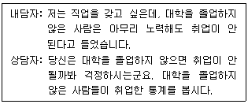
- 주지화
- 자기개방
- 유도된 상상
- 논리적 분석
- 역설적 기법
(정답률: 알수없음)
23. 청소년 집단진로상담의 특징으로 옳은 것을 모두 고른 것은?
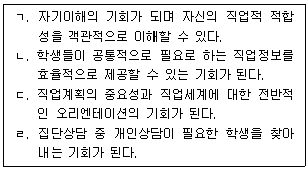
- ㄱ, ㄷ
- ㄱ, ㄹ
- ㄱ, ㄷ, ㄹ
- ㄴ, ㄷ, ㄹ
- ㄱ, ㄴ, ㄷ, ㄹ
(정답률: 알수없음)
24. 사이버 진로상담의 장점에 해당하는 것을 모두 고른 것은?
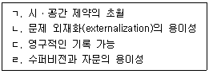
- ㄱ, ㄴ
- ㄷ, ㄹ
- ㄱ, ㄴ, ㄷ
- ㄴ, ㄷ, ㄹ
- ㄱ, ㄴ, ㄷ, ㄹ
(정답률: 알수없음)
25. 여성 진로상담에 관한 설명으로 옳지 않은 것은?
- 성역할 고정관념 내면화 가능성을 알아본다.
- 직장에서 부딪히는 성불평등적 요소에 대하여 자신의 의견을 표현할 수 있도록 돕는다.
- '수퍼우먼증후군'을 앓고 있는 여성에 대해 인지적 재구조화를 시도하도록 한다.
- 직업탐색 기술을 증진시키고자 할 때는 성불평등적인 요소들을 미리 파악하여 대응할 수 있도록 한다.
- 경력단절의 가능성을 고려하여 단기적인 진로설계를 격려한다.
(정답률: 알수없음)
2과목: 집단상담
26. 얄롬(I. Yalom)의 치료적 요인 중 실존적 요인을 모두 고른 것은?
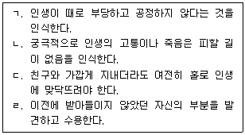
- ㄱ, ㄴ
- ㄴ, ㄷ
- ㄱ, ㄴ, ㄷ
- ㄱ, ㄷ, ㄹ
- ㄱ, ㄴ, ㄷ, ㄹ
(정답률: 알수없음)
27. 집단상담의 잠재적 위험을 모두 고른 것은?
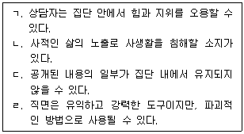
- ㄱ, ㄹ
- ㄴ, ㄷ
- ㄱ, ㄴ, ㄷ
- ㄴ, ㄷ, ㄹ
- ㄱ, ㄴ, ㄷ, ㄹ
(정답률: 알수없음)
28. 코리(G. Corey)의 집단상담 작업단계에서 다음 ( )에 들어갈 상담자 개입으로 옳은 것은?
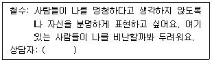
- 만약 비판받을 것 같은 두려움이 없어진다면, 당신은 이 집단에서 어떻게 달라질까요?
- 이와 비슷하게 비난받을까봐 두려워하는 느낌을 가진 집단원이 있나요?
- 언제 그런 두려움을 느꼈고, 이 집단에서 누구를 가장 의식하고 있나요?
- 철수처럼 여기에서 두려움이나 다른 감정을 느낀 집단원이 있나요?
- 당신이 생각하거나 느꼈지만 표현하지 못한 것은 또 어떤 것이 있나요?
(정답률: 알수없음)
29. 집단상담을 축소된 사회라고 보는 얄롬(I. Yalom)의 관점으로 옳은 것을 모두 고른 것은?
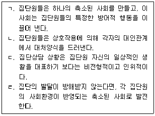
- ㄱ, ㄴ
- ㄷ, ㄹ
- ㄱ, ㄴ, ㄹ
- ㄴ, ㄷ, ㄹ
- ㄱ, ㄴ, ㄷ, ㄹ
(정답률: 알수없음)
30. 얄롬(I. Yalom)의 치료적 요인 중 '대인관계 - 입력'으로 옳지 않은 것은?
- 내가 다른 사람에게 어떤 모습으로 보이는지 알게 된다.
- 타인을 짜증나게 하는 나의 습관이나 태도를 알게 된다.
- 다른 사람도 나만큼 혼란스러운 가족관계가 있음을 알게 된다.
- 내 생각을 말하지 않음으로써 때때로 사람들을 혼란에 빠뜨린다는 점을 알게 된다.
- 내가 다른 사람에게 어떤 인상을 주는지 알게 된다.
(정답률: 알수없음)
31. 비생산적인 집단 분위기로 발전하는 것을 방지하기 위해 상담자가 개입해야 할 상황으로 옳은 것을 모두 고른 것은?
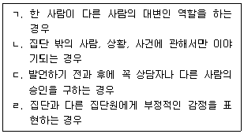
- ㄱ, ㄴ
- ㄴ, ㄷ
- ㄱ, ㄴ, ㄷ
- ㄱ, ㄷ, ㄹ
- ㄱ, ㄴ, ㄷ, ㄹ
(정답률: 알수없음)
32. 다음의 집단원이 말하는 치료적 요인은?
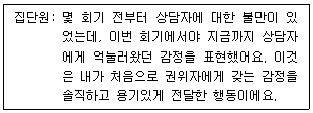
- 대인관계 학습-산출
- 정화
- 대리학습
- 자기이해
- 지도
(정답률: 알수없음)
33. 집단상담자의 개방에 관한 설명으로 옳지 않은 것은?
- 상담자도 한 인간이라는 것을 느낄 수 있도록 충분히 자신을 드러낸다.
- 상담자가 집단원에 의해 어떻게 영향을 받고 있는지를 적절하게 표현한다.
- 개방을 하나의 기법으로 사용하기보다는 적절하다고 판단될 때 자발적으로 해야 한다.
- 진솔성 차원에서 상담자 개인적 삶의 모든 측면을 공개한다.
- 정직하고 적절하게 개방함으로써 집단원에게 집단규범 형성의 모델이 된다.
(정답률: 알수없음)
34. 집단상담 초기단계에서 상담자의 역할로 옳지 않은 것은?
- 갈등상황을 충분히 다루는 일에 대한 가치를 집단원들이 경험하게 한다.
- 개방적이고 존중하는 태도로 집단원의 이야기를 듣고 집단원의 경험을 가치있게 여긴다.
- 집단원들의 두려움과 기대를 표현하도록 돕는다.
- 의존성을 부추기지 않으면서 집단원이 혼란스럽지 않도록 적당히 구조화한다.
- 집단과정을 신뢰하고 집단원들이 의미있는 변화를 만들어 내는 능력이 있음을 믿는다.
(정답률: 알수없음)
35. 집단상담자의 '직면하기' 내용을 옳게 나열한 것은?
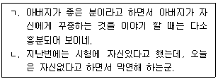
- ㄱ: 전후 발언의 차이, ㄴ: 언행 불일치
- ㄱ: 전후 발언의 차이, ㄴ: 발언의 내용과 감정의 차이
- ㄱ: 언행 불일치, ㄴ: 발언의 내용과 감정의 차이
- ㄱ: 발언의 내용과 감정의 차이, ㄴ: 언행 불일치
- ㄱ: 발언의 내용과 감정의 차이, ㄴ: 전후 발언의 차이
(정답률: 알수없음)
36. 실존주의 집단상담에서 인간 실존의 궁극적인 조건으로 옳지 않은 것은?
- 자유
- 무의미함
- 죽음
- 불안
- 실존적 소외
(정답률: 알수없음)
37. 아들러(A. Adler) 집단상담에서 '재정향과 재교육' 단계의 상담자 과업으로 옳지 않은 것은?
- 집단원의 자신, 타인, 삶에 대한 잘못된 신념에 도전하기
- 대안적인 신념, 행동, 태도를 고려하여 삶의 과제에 효과적으로 대처하도록 조력하기
- 잘못된 삶의 패턴을 재정향하고 협력적인 상호작용을 이끄는 원리를 교육하기
- 자기-제한적인 가정에 도전하기 위해 '마치 ~인 것처럼'과 같은 행동지향적인 기법을 활용하기
- 지금-여기의 행동양식에 대한 동기를 탐색하고 다른 관점에서 자신을 보도록 잠정적인 가설을 제시하기
(정답률: 알수없음)
38. 다음의 역할연기에서 사용된 교류분석 상담기법은?
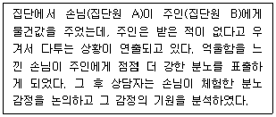
- 기능분석
- 라켓분석
- 게임분석
- 구조분석
- 인생태도 분석
(정답률: 알수없음)
39. 게슈탈트 집단상담에서 다음이 설명하는 것은?
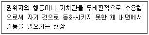
- 투사
- 내사
- 융합
- 반전
- 편향
(정답률: 알수없음)
40. 합리적 정서행동치료 집단상담자의 기술로 옳지 않은 것은?
- “~해야만 한다.” 대신에 “~하면 더 낫다.”는 진술방식을 학습하게 한다.
- 최악의 상황을 상상하게 하여 상황과 맞지 않는 부적절한 감정이 적절한 감정으로 변화될 수 있도록 한다.
- 창피하거나 부끄럽게 느껴지는 행동을 하게 함으로써 비난에 과도하게 영향을 받지 않도록 한다.
- 역할연기를 통해 집단원 자신이 할 수 있는 행동을 인식하게 한다.
- 문제가 없었던 때의 자동적 사고를 탐색하고 그것을 더 잘 활용하도록 한다.
(정답률: 알수없음)
41. 다음 질문을 사용하는 집단상담자에 관한 설명으로 옳은 것은?
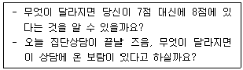
- 기적질문, 간접적인 칭찬을 활용한다.
- 집단원의 투사를 해석한다.
- 집단원의 현재 삶을 방해하는 과거 경험을 회상하도록 한다.
- 집단원의 잘못된 신념을 명료화한다.
- 상담자가 내담자보다 한 발짝 앞에서 상담을 이끈다.
(정답률: 알수없음)
42. 집단원 지수의 행동과 상담자의 개입 기술을 옳게 짝지은 것은?
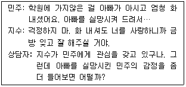
- 충고를 일삼는 집단원 –해석
- 충고를 일삼는 집단원 –직면
- 일시적으로 구원하는 집단원 –공감
- 일시적으로 구원하는 집단원 –차단하기
- 긍정적인 집단원 -자기노출
(정답률: 알수없음)
43. 다음 집단상담자 반응에 관한 설명으로 옳지 않은 것은?
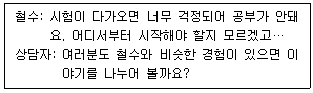
- 집단의 상호작용을 촉진한다.
- 집단의 응집력을 증가시킨다.
- 집단원들이 자연스럽게 보편성을 경험하게 한다.
- 집단원들이 서로의 유사성에 대해 알게 한다.
- 집단원의 마음을 정확하게 이해하고 수용하고 있음을 전달한다.
(정답률: 알수없음)
44. 침묵하는 집단원에 대한 상담자의 개입방법으로 옳지 않은 것은?
- 생산적 침묵인지, 비생산적 침묵인지 검토한다.
- 침묵이 집단원의 문화적 다양성에서 온 것은 아닌지 생각해 본다.
- 침묵하는 집단원의 표정, 몸짓에 대해 언급함으로써 집단에 참여시킨다.
- 생산적인 침묵이 생겨난 동안 어떤 집단원이 말하기 시작한 경우 조금 더 기다려 달라고 요청할 수 있다.
- 회기 초기에는 긴 침묵이 생기고 집단원들이 열중하지 않아도 기다린다.
(정답률: 알수없음)
45. 집단상담 평가에 관한 설명으로 옳은 것을 모두 고른 것은?
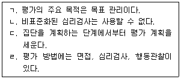
- ㄱ, ㄷ
- ㄴ, ㄹ
- ㄱ, ㄴ, ㄷ
- ㄱ, ㄷ, ㄹ
- ㄱ, ㄴ, ㄷ, ㄹ
(정답률: 알수없음)
46. 집단원 선별 과정에 관한 설명으로 옳지 않은 것은?
- 공동지도자는 두 사람이 함께 개개인을 면담하는 것이 바람직하다.
- 예비 집단원이 상담자에게 질문할 기회를 준다.
- 반사회성, 급성 정신병 등 위기에 처한 예비 집단원은 상담집단에서 제외한다.
- 상담자가 개인적으로 싫어하거나 전이 문제가 생길 것 같은 예비 집단원은 배제한다.
- 상담자가 집단원을 선별하기도 하지만 집단원도 집단 참여 여부를 결정할 수 있다.
(정답률: 알수없음)
47. ( )에 들어갈 내용으로 옳은 것은?
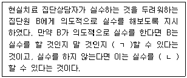
- ㄱ: 통제, ㄴ: 해석
- ㄱ: 해석, ㄴ: 직면
- ㄱ: 선택, ㄴ: 직면
- ㄱ: 선택, ㄴ: 통제
- ㄱ: 직면, ㄴ: 해석
(정답률: 알수없음)
48. 다문화 청소년 집단상담에서 상담자의 윤리적 행동으로 옳은 것을 모두 고른 것은?
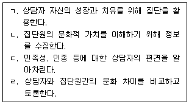
- ㄱ, ㄴ
- ㄴ, ㄷ
- ㄷ, ㄹ
- ㄱ, ㄴ, ㄷ
- ㄴ, ㄷ, ㄹ
(정답률: 알수없음)
49. 집단상담 사전동의서에 포함될 내용으로 옳지 않은 것은?
- 상담자의 자격과 이론적 지향
- 집단 참여에 따르는 위험과 이점
- 비밀보장의 한계
- 집단 참가 결과로 집단원이 기대할 수 있는 것
- 집단의 암묵적 규범
(정답률: 알수없음)
50. 다음에서 설명하는 심리극의 상담기법은?
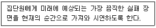
- 마술가게
- 미래투사
- 가상질문
- 행동조성
- 자유연상
(정답률: 알수없음)
3과목: 가족상담
51. 일반체계이론에 관한 설명으로 옳은 것을 모두 고른 것은?
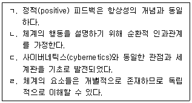
- ㄱ, ㄴ
- ㄱ, ㄹ
- ㄴ, ㄷ
- ㄱ, ㄴ, ㄷ
- ㄴ, ㄷ, ㄹ
(정답률: 알수없음)
52. 청소년 자녀가 있는 가족의 발달과업으로 옳지 않은 것은?
- 자녀의 발달과 변화에 대응하여 부모의 역할도 변해야 한다.
- 부모는 자녀를 보호하고 양육하며 자녀가 원하는 것을 무조건 허용한다.
- 자녀가 책임감을 가지도록 가족의 구조와 조직을 변화시킨다.
- 자녀가 가족체계에 자유롭게 출입할 수 있도록 가족의 경계를 유연하게 설정한다.
- 결혼생활 중인 부모는 부부관계의 재적응과 재협상에도 주력한다.
(정답률: 알수없음)
53. 가족상담 모델과 상담목표 또는 상담기법의 연결로 옳지 않은 것은?
- 보웬(Bowen) 가족상담 – 탈삼각화
- 경험적 가족상담 – 가족조각
- 구조적 가족상담 – 균형깨기
- 밀란(Milan) 가족상담 - 불변의 처방
- 전략적 가족상담 - 관계윤리 회복
(정답률: 알수없음)
54. 이야기치료의 기법에 관한 설명으로 옳은 것은?
- 독특한 결과(unique outcome) 대화 - 개인의 정체성이 인생 클럽을 통해 회원 공동으로 생산되는 복합적 성격의 것임을 가정하는 대화
- 정의예식(definitional ceremony) - 내담자가 자신이 선호하는 삶의 이야기를 청중 앞에서 사회적으로 인정받는 경험을 갖게 하는 기법
- 외부증인집단의 다시 말하기(re-telling) - 내담자의 이야기에 대해 은유를 중심으로 말하도록 돕는 대화
- 외재화(externalization) 대화 - 문제가 일어나지 않은 예외적 상황을 탐색하는데 초점을 두는 대화
- 회원재구성(re-membering) 대화 - 문제의 사회문화적 발생 맥락을 반영하여 문제를 사람과 분리시키는 기법
(정답률: 알수없음)
55. 다음 구조적 가족상담에서 상담자2의 질문 기법은?
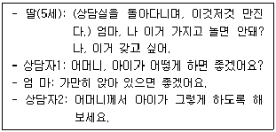
- 유지하기
- 추적하기
- 실연하기
- 모방하기
- 증상을 과장하기
(정답률: 알수없음)
56. 후기 가족상담의 발전에 영향을 미친 이론적 기초에 관한 설명으로 옳은 것을 모두 고른 것은?
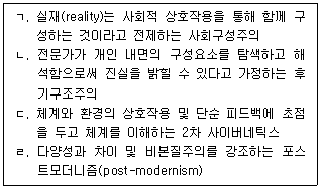
- ㄱ, ㄴ
- ㄱ, ㄷ
- ㄱ, ㄹ
- ㄴ, ㄷ
- ㄴ, ㄹ
(정답률: 알수없음)
57. 다음 구조적 가족지도에 나타난 가족역동에 관한 설명으로 옳지 않은 것은?
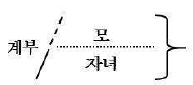
- 모와 자녀는 연합되어 있다.
- 모-자녀 간에 위계구조가 형성되어 있다.
- 모와 자녀는 침투적이고 모호한 경계선을 이루고 있다.
- 재혼관계에서 부모간의 갈등이 자녀에게 우회되고 있다.
- 계부와 자녀 간에는 경직되고 유리된 경계선을 이루고 있다.
(정답률: 알수없음)
58. 가족상담 이론가와 상담기법의 연결로 옳은 것은?
- 화이트(M. White) - 가족의례
- 헤일리(J. Haley) - 고된 체험기법
- 휘태커(C. Whitaker) - 다각적 편파성
- 마다네스(C. Madanes) - 영향력의 수레바퀴
- 보스조르메니-나지(I. Boszormenyi-Nagy) - 증상처방
(정답률: 알수없음)
59. 보웬(M. Bowen)의 가족상담에 관한 설명으로 옳지 않은 것은?
- 만성불안에 대한 감정반사행동을 줄이는 것을 목표로 한다.
- 가족의 비생산적 관계과정을 변화시키기 위해 관계실험을 한다.
- 가족투사과정은 부모가 자신들의 미성숙함을 자녀에게 투사하는 과정이다.
- 엉켜진 가족역동으로부터 구성원 개인의 명료하고 엄격한 분리를 통해 자기분화 수준을 높인다.
- 정서적 단절은 개인이 불안을 관리하기 위해 가족구성원과 감정적 교류를 더 이상 하지 않는 것이다.
(정답률: 알수없음)
60. 이야기치료에 관한 내용으로 옳은 것은?
- 이야기치료는 발달 초기에 베이트슨(G. Bateson)의 영향을 받았다.
- 인간의 정체성은 심층적인 자기의 외적 표현에 의해 구성된다고 가정한다.
- 이야기치료자는 중심적이고 영향력 있는 위치에서 내담자의 문제에 개입한다.
- 이야기 재저작(re-authoring)의 주요 목적은 경험의 의미를 진단하는 것이다.
- 공명하기(resonance) 대화는 문제 중심의 지배적 이야기와 맞지 않는 일련의 일화를 말하는 것이다.
(정답률: 알수없음)
61. 해결중심 단기 가족상담에 관한 내용으로 옳은 것은?
- 객관적인 사실과 실재를 믿는 과학적 낙관주의를 기초로 한다.
- 문제 상황의 정확한 분석을 중시하므로 전문가가 해결의 방향을 인도한다.
- 과거에 관심을 두고 구성원의 원가족 경험을 진단하는데 주력한다.
- 비자발적인 방문형 내담자에게는 일반적으로 관찰 과제를 부여한다.
- 변화는 삶의 일부로서 불가피하며 계속적으로 일어난다고 가정한다.
(정답률: 알수없음)
62. 사티어(V. Satir)의 경험적 가족상담에 관한 설명으로 옳은 것은?
- 회유형은 돌봄과 양육 및 민감성이라는 자원을 갖고 있다.
- 비난형은 자아존중감의 상황 요소를 무시하는 성향을 보인다.
- 일치형은 규칙과 옳은 것을 중시하고 극단적으로 객관성을 보인다.
- 산만형은 유머가 풍부해 상담에서 심리적으로 접촉하기가 가장 쉬운 유형이다.
- 초이성형은 외적으로 공격적인 행동을 보이지만 내적으로 소외감을 느끼는 경향이 크다.
(정답률: 알수없음)
63. 밀란(Milan) 모델에 관한 설명으로 옳은 것을 모두 고른 것은?
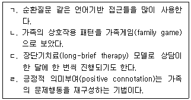
- ㄴ, ㄹ
- ㄱ, ㄴ, ㄷ
- ㄱ, ㄷ, ㄹ
- ㄴ, ㄷ, ㄹ
- ㄱ, ㄴ, ㄷ, ㄹ
(정답률: 알수없음)
64. 해결중심 단기 가족상담의 목표 설정 시 고려해야 하는 원칙으로 옳지 않은 것은?
- 구체적이고 측정할 수 있는 행동을 목표로 삼는다.
- 상담자가 중요하다고 판단하는 것을 목표로 한다.
- 목표 수행이 힘들고 어려운 일이라고 인식하게 한다.
- 내담자의 현실 생활에서 성취 가능한 것을 목표로 삼는다.
- 문제를 없애는 것보다 새로운 행동을 시작하는 것을 목표로 한다.
(정답률: 알수없음)
65. 보웬(M. Bowen)의 가족상담에 관한 설명으로 옳은 것을 모두 고른 것은?
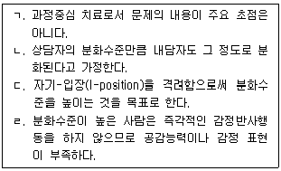
- ㄱ, ㄴ
- ㄴ, ㄷ
- ㄱ, ㄴ, ㄷ
- ㄱ, ㄷ, ㄹ
- ㄴ, ㄷ, ㄹ
(정답률: 알수없음)
66. 가족상담의 개념에 관한 설명으로 옳지 않은 것은?
- 부부불균형(marital skew): 부부 중 한 사람은 지속적으로 약하고 다른 한 사람은 강한 위치에 있는 상황
- 이중구속(double bind): 베르탈란피(L. Bertalanffy)가 소개하였으며 언어적 및 비언어적 메시지가 일치하지 않는 의사소통 상황
- 고무울타리(rubber fence): 가족원 개인의 정체성을 찾으려는 시도가 무시되고 가족이 함께해야 한다는 믿음으로 가족의 경계를 확장해 가는 상황
- 거짓적대성(pseudo-hostility): 윈(L. Wynne)이 소개하였으며 가족구성원들이 겉으로 거리를 두거나 적대적인 방식으로 상호작용하는 상황
- 부부균열(marital schism): 리즈(T. Lidz)가 소개하였으며 부부가 서로 역할을 교환할 수 없고 목표를 공유하거나 보완할 수 없는 상황
(정답률: 알수없음)
67. 다음 사례에 대해 가족상담자가 M에게 할 수 있는 개입에 관한 설명으로 옳은 것은?
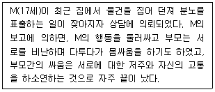
- 그렇게 힘든 상황을 어떻게 견디었고 어떻게 해서 상황이 더 나빠지지 않을 수 있었는지 살펴보기 위해 대처질문을 한다.
- 부모가 서로 비난하고 싸우는 상황에서 어떤 생각을 했는지 파악하기 위해 관계성질문을 한다.
- 자신의 삶에서 중요하게 생각하는 소망과 소신 등의 지향 상태를 파악하기 위해 예외질문을 한다.
- 자신이 지각한 가족구성원들 간의 상호작용에 대해 이야기하도록 하기 위해 위장기법(pretend technique)을 활용한다.
- 물건을 집어 던지며 분노를 표현하는 상황에 이름이나 제목을 붙여보라고 요청하는 과정질문을 한다.
(정답률: 알수없음)
68. 가족생활주기에 관한 설명으로 옳은 것을 모두 고른 것은?
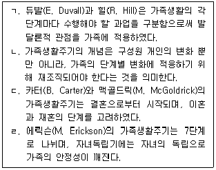
- ㄱ, ㄴ
- ㄴ, ㄷ
- ㄴ, ㄹ
- ㄱ, ㄴ, ㄷ
- ㄱ, ㄷ, ㄹ
(정답률: 알수없음)
69. 다음 사례에 대한 가족상담 개입으로 옳지 않은 것은?
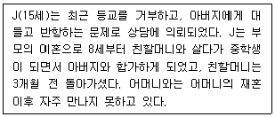
- 친할머니의 상실에 대한 애도작업을 한다.
- J의 부모에 대한 분열된 충성심을 다룬다.
- 아버지와의 친밀감 향상을 위한 작업을 한다.
- J의 반항행동이 문제이므로 행동수정 작업만 한다.
- 어머니와의 정서적 단절 이슈에 대해 작업한다.
(정답률: 알수없음)
70. 사티어(V. Satir)의 경험적 가족상담에 관한 내용으로 옳지 않은 것은?
- 가족체계를 이해하는 과정에서 상호작용의 핵심 요소로서 의사소통에 초점을 둔다.
- 개인의 성장과 가족의 기능에 방해가 되는 가족규칙을 수정하는 작업을 한다.
- 자아존중감은 생애 초기에 주 양육자와의 관계에서 학습되고 발달한다고 본다.
- 가족의 역기능을 자녀에 대한 부모의 투사과정의 관점에서 사정한다.
- 원가족 도표를 활용하여 가족의 역동과 의사소통 방식 및 세대 간의 유사점과 차이점을 파악한다.
(정답률: 알수없음)
71. 가족상담 초기단계에서 상담자의 역할에 관한 설명으로 옳지 않은 것은?
- 문제에 대한 각 가족구성원의 관점을 탐색한다.
- 각 구성원의 목표를 탐색하고 합의된 목표를 설정한다.
- 가족구성원 중 먼저 오는 사람 편에서 동맹관계를 맺는다.
- 가족의 상호교류방식을 존중하고 치료적 관계를 형성한다.
- 가족구성원 개인에게 공감하여 편안한 마음을 갖도록 한다.
(정답률: 알수없음)
72. 다음 사례에 대한 가족상담의 개입으로 옳지 않은 것은?
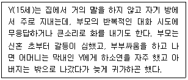
- 가족구성원 개인의 내적 경험을 이해하기 위해 빙산기법을 활용한다.
- 가계도를 활용하여 가족의 정서적 역동과 패턴을 살펴본다.
- 부모-자녀하위체계가 적절한 기능을 하는지 살펴본다.
- 가족의 부적절하고 역기능적인 위계구조를 살펴본다.
- 가족체계의 전체 역동과 특성을 파악하기 위해 구성원 개인별로 성격유형 검사를 실시한다.
(정답률: 알수없음)
73. 가족상담에서 활용되는 평가도구에 관한 설명으로 옳은 것은?
- 순환모델의 FACES 척도는 가족기능을 측정한다.
- ENRICH 검사는 부부의 응집력과 적응력을 측정한다.
- 가계도는 계량적 척도로 가족의 다세대 역동과 관계망을 평가한다.
- 생태도는 가족을 둘러싼 생물학적 환경과의 관계를 탐색하는데 사용한다.
- McMaster 모델의 가족사정척도(FAD)는 구성원들의 내적인 경험을 시각적으로 평가한다.
(정답률: 알수없음)
74. 다음 가계도에서 IP(Identified Patient)의 가족역동에 관한 설명으로 옳지 않은 것은?
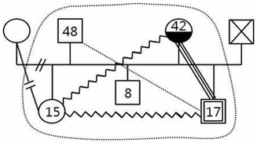
- IP는 모와 친밀한 관계이다.
- IP는 계부와 소원한 관계이다.
- IP는 이복 여동생과 갈등관계이다.
- IP의 이복 여동생은 친모와 단절되어 있다.
- IP의 모는 알코올 남용의 문제를 가지고 있다.
(정답률: 알수없음)
75. 가족상담을 시작하기 전에 내담자에게 고지하고 동의를 구해야 하는 내용을 모두 고른 것은?
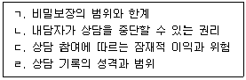
- ㄱ, ㄴ, ㄷ
- ㄱ, ㄴ, ㄹ
- ㄱ, ㄷ, ㄹ
- ㄴ, ㄷ, ㄹ
- ㄱ, ㄴ, ㄷ, ㄹ
(정답률: 알수없음)
4과목: 학업상담
76. 학습과 관련된 주요 호소 문제와 원인에 관한 설명으로 옳지 않은 것은?
- 학습 능력의 문제는 특정 영역에서의 낮은 학습 능력의 문제와 낮은 지능의 문제로 구분할 수 있다.
- 학습 태도의 문제는 공부에 대한 반감, 공부 습관 미형성 등이 될 수 있다.
- 개인 내 요인은 성격, 적성과 흥미의 불일치, 역기능적 사고 등과 관련이 있다.
- 가정 내 요인은 부모, 형제, 가족 내 정서와 관련이 있다.
- 학습 동기의 문제는 암기 위주의 태도, 문제풀이 위주의 태도 등이 있다.
(정답률: 알수없음)
77. 학습과 관련된 주요 요인 중 인지적 영역에 해당하는 것을 모두 고른 것은?
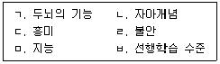
- ㄱ, ㄷ, ㅁ
- ㄱ, ㄹ, ㅂ
- ㄱ, ㅁ, ㅂ
- ㄴ, ㄹ, ㅂ
- ㄷ, ㅁ, ㅂ
(정답률: 알수없음)
78. 학습과 수면의 관계에 관한 설명으로 옳지 않은 것은?
- 공부 능률을 향상시키는 뇌파는 세타파(4∼7 Hz)이다.
- 높은 긴장감과 스트레스로 밤잠을 이루기 힘든 경우에는 30분 정도 가벼운 운동 후 따뜻한 물로 샤워를 한다.
- 잠자기 전에 암기과목을 공부하는 것이 효율적이다.
- 단기기억이 장기기억으로 저장되는 과정은 렘(REM)수면 중에 대부분 이루어진다.
- 낮잠은 두뇌피로를 풀고, 학습효과를 상승시키는데 효과가 있으므로 30분 정도 자는 것이 좋다.
(정답률: 알수없음)
79. 로젠샤인과 스티븐스(Rosenshine & Stevens)가 제시한 피드백 유형 중 다음에 해당하는 것은?
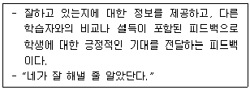
- 수행
- 동기
- 귀인
- 전략
- 공감
(정답률: 알수없음)
80. 다음 학습 문제 사례에 해당되는 문제 유형은?
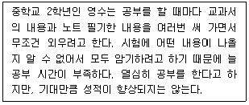
- 시험불안
- 주의산만
- 관계 문제
- 비효과적인 학습방법
- 동기 부족
(정답률: 알수없음)
81. 주의력결핍과잉행동장애(ADHD)에 관한 설명으로 옳은 것을 모두 고른 것은?
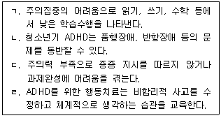
- ㄱ, ㄷ
- ㄴ, ㄹ
- ㄱ, ㄴ, ㄷ
- ㄴ, ㄷ, ㄹ
- ㄱ, ㄴ, ㄷ, ㄹ
(정답률: 알수없음)
82. 학업관련 검사에 관한 설명으로 옳지 않은 것은?
- 웩슬러 지능검사 K-WISC-Ⅴ는 언어이해, 유동추론, 작업기억, 처리속도의 네 가지 지표점수를 제공한다.
- 기초학습기능 수행평가체제 BASA는 학생들이 실제로 배우는 기초학습기능에 근거하여 수행정도를 평가한다.
- 학습전략검사 MLST는 성격적 차원, 정서적 차원, 동기적 차원, 행동적 차원의 네 가지로 구성된다.
- 학업동기검사 AMT는 학업적 자기효능감 척도와 학업적 실패내성 척도로 구성된다.
- 학습성격유형검사 U&I는 행동형, 규범형, 탐구형, 이상형의 네 가지 유형을 제시한다.
(정답률: 알수없음)
83. DSM-5에 의한 특정학습장애(Specific Learning Disabilities) 진단 기준에 관한 설명으로 옳은 것은?
- 정상수준 이하의 지능을 가지고 있어 학습하는데 어려움을 보인다.
- 특정 학습 영역을 위한 중재를 받았음에도 불구하고 읽기, 쓰기, 수학 영역 중 적어도 한 가지 영역에서 어려움을 보인다.
- 17세 이상의 개인도 학습의 어려움에 대한 기록들과 표준화된 성취 도구를 통해 공식적으로 확인된다.
- 학습의 어려움은 지적 장애, 색맹, 다른 정신적 장애 등을 잘 설명한다.
- 성인기에는 나타날 수 없는 것으로 본다.
(정답률: 알수없음)
84. 학업 상황에서 중요한 개인의 특성인 그릿(Grit)에 관한 설명으로 옳지 않은 것은?
- 학업에서의 실패를 극복하고 새로운 목표를 이루는데 필요한 개인의 특성이다.
- 상황적 어려움에도 불구하고 포기하지 않고 끝까지 버티는 힘을 의미한다.
- 흥미유지와 노력지속의 2개 구인으로 구성된다.
- 비교적 안정적인 성격적 특성 중 하나로 변하지 않는 개인의 고유한 특성이다.
- 학업성취를 비롯한 성공을 예언하는 개인적 특성이다.
(정답률: 알수없음)
85. 학습전략에 관한 설명으로 옳은 것은?
- 학습 내용을 언어로 익힐 뿐만 아니라 이미지로 떠올려 보는 것을 유의미화라고 한다.
- 읽기 전 전략으로, 새로운 내용을 학습하기 전에 관련된 기존 지식을 떠올리는 것을 구조화라고 한다.
- 읽기를 본격적으로 하기 전에 배울 내용이 어떤 내용으로 구성되어 있는지 전체적으로 살펴보는 것을 요약이라 한다.
- 중요한 내용을 기억하기 위해 단순히 반복하여 말하고 쓰는 것을 정교화라고 한다.
- 학습 내용들 간의 논리적 관계를 염두에 두고 내용을 정리하는 것을 조직화라고 한다.
(정답률: 알수없음)
86. 초인지 및 초인지 전략에 관한 설명으로 옳은 것을 모두 고른 것은?
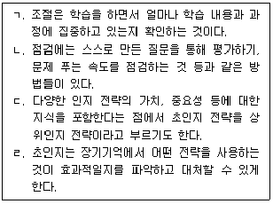
- ㄱ, ㄴ
- ㄴ, ㄷ
- ㄷ, ㄹ
- ㄱ, ㄴ, ㄷ
- ㄴ, ㄷ, ㄹ
(정답률: 알수없음)
87. 앳킨슨과 시프린(Atkinson & Shiffrin)의 이중저장기억 모델에 관한 설명으로 옳지 않은 것은?
- 주의를 기울이지 않으면 감각등록기에서 받아들인 정보는 그대로 사라진다.
- 작업기억의 저장 용량은 7±2 단위 정도의 정보를 한 번에 처리할 수 있는 수준이다.
- 작업기억에서 한 번에 많은 정보를 처리하기 위한 방법으로 청킹(chunking) 등이 있다.
- 감각등록기에서 작업기억으로 들어가기 위해서는 시연 등의 인지전략을 사용해야 한다.
- 장기기억으로 들어가기 위해서는 정보의 심층적인 내용을 이해하고 있어야 한다.
(정답률: 알수없음)
88. 로빈슨(H. Robinson)의 SQ3R에 관한 설명으로 옳지 않은 것은?
- 질문하기(Question): 읽고 표시하면서 주제, 논지의 전개, 매 단락에서 알아야 할 것을 질문한다.
- 훑어보기(Survey): 요약된 단락을 읽는다.
- 읽기(Reading): 읽는 동안 중요한 개념 혹은 질문에 대한 답이 되는 부분에 표시를 한다.
- 복습하기(Review): 전반적으로 다시 읽으며 주요 핵심개념을 이해했는가 확인한다.
- 암송하기(Recite): 중요한 부분을 속으로 혹은 소리내어 암송한다.
(정답률: 알수없음)
89. 주의집중 향상전략 중 내재적 언어를 통한 자기통제력 향상 방법에 속하는 것을 모두 고른 것은?
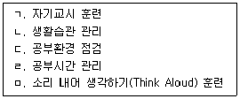
- ㄱ, ㄴ
- ㄱ, ㅁ
- ㄴ, ㄹ
- ㄷ, ㄹ
- ㄷ, ㅁ
(정답률: 알수없음)
90. 시간계획 및 시간관리 전략에 관한 설명으로 옳은 것은?
- 학습에서의 시간계획은 고정적인 시간계획이며 여가시간의 확보는 포함하지 않는다.
- 학습목표는 단기목표보다 장기목표를 세우는 것이 좋다.
- 제한된 시간 내에 원하는 일을 해내는데 있어, 우선순위 정하기는 결정적인 역할을 한다.
- 시간관리 매트릭스는 중요도와 가치에 따라 정리하는 것이다.
- 빈틈없이 고정적인 시간계획을 세우는 것이 좋다.
(정답률: 알수없음)
91. 시험준비 행동에 관한 설명으로 옳지 않은 것은?
- 자기손상 전략은 시험에 실패할 경우 자신의 능력으로 귀인하기 위해 시험 전에 전략적으로 시험에 방해가 될 만한 행동을 하는 것이다.
- 능동형 준비자는 구체적이고 접근 가능한 과제를 선택하나, 수동적 준비자는 거의 계획을 세우지 않거나 막연한 계획을 세운다.
- 노트정리도 중요한 시험준비 학습기술이다.
- 시험의 난이도와 경험에 따라 학습자에게 적합하고 효과적인 시험준비 전략이 필요하다.
- 단순히 기계적으로 암기하기보다 이해를 수반하는 학습이 효과적이다.
(정답률: 알수없음)
92. 학업상담 과정을 순서대로 바르게 나열한 것은?
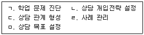
- ㄱ - ㄷ - ㄹ - ㅁ – ㄴ
- ㄱ - ㄷ - ㅁ - ㄴ – ㄹ
- ㄱ - ㄷ - ㅁ - ㄹ - ㄴ
- ㄷ - ㄱ - ㄴ - ㅁ – ㄹ
- ㄷ - ㄱ - ㅁ - ㄴ - ㄹ
(정답률: 알수없음)
93. 다음은 로크와 라뎀(Locke & Latham)이 제시한 학습목표 설정에 대한 학습자의 헌신(commitment)에 영향을 주는 요인들이다. 개인적 요인에 해당하는 것을 모두 고른 것은?
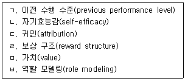
- ㄱ, ㄴ, ㄹ
- ㄱ, ㄴ, ㄷ, ㅁ
- ㄱ, ㄷ, ㅁ, ㅂ
- ㄴ, ㄷ, ㄹ, ㅁ
- ㄴ, ㄷ, ㄹ, ㅂ
(정답률: 알수없음)
94. 셀리그만(M. Seligman)의 학습된 무력감(learned helplessness)에 관한 설명으로 옳지 않은 것은?
- 인지적 왜곡을 유도한다.
- 결과를 통제하려는 동기를 감소시킨다.
- 치료와 예방이 가능하다.
- 스스로 어쩔 수 없다는 수반성(contingency) 인지에 의해 형성된다.
- 반복적 실패경험이 상황에 대한 통제성 상실을 초래한 상태이다.
(정답률: 알수없음)
95. 데시(E. Deci)와 라이언(R. Ryan)의 자기결정성 이론에 따라 자기결정성의 개입이 낮은 것부터 순서대로 바르게 나열한 것은?
- ㄱ - ㄴ - ㄷ - ㄹ - ㅁ – ㅂ
- ㄱ - ㄴ - ㄷ - ㄹ - ㅂ – ㅁ
- ㄱ - ㄷ - ㄴ - ㄹ - ㅂ – ㅁ
- ㄴ - ㄷ - ㄱ - ㄹ - ㅂ – ㅁ
- ㄷ - ㄴ - ㄱ - ㄹ - ㅁ - ㅂ
(정답률: 알수없음)
96. 에임스(C. Ames)의 숙달목표지향성에 관한 설명으로 옳지 않은 것은?
- 과제를 숙달하고 배우고 익히는데 초점을 둔다.
- 최상의 학점을 얻는 것, 일등하는 것 등에 목표가 있다.
- 자기향상, 과제에 대한 심층적 이해 등을 기준으로 한다.
- 학습의 내재적 가치를 중요시한다.
- 도전적인 과제를 선호하고, 모험을 추구한다.
(정답률: 알수없음)
97. 학습부진 및 학습부진아에 관한 설명으로 옳은 것은?
- 테일러(R. Taylor)는 학습부진아가 학업지향적이라고 보았다.
- 부모 이혼, 전학 등은 만성 학습부진의 원인이다.
- 교사와의 관계, 친구와의 관계로 인한 학습부진은 외적환경의 영향이 원인이다.
- 학습부진 아동 대부분은 정서적응과 사회행동이 정상적이다.
- 가족구조의 변화로 인한 학습부진은 개인 내적 문제이다.
(정답률: 알수없음)
98. 시험불안에 대한 개입방법 중 '합리적으로 생각하기'의 순서로 옳은 것은?
- ㄱ - ㄴ - ㄷ - ㄹ – ㅁ
- ㄱ - ㄴ - ㄹ - ㄷ – ㅁ
- ㄱ - ㄹ - ㄴ - ㄷ - ㅁ
- ㄴ - ㄷ - ㄹ - ㄱ – ㅁ
- ㄴ - ㄹ - ㄷ - ㄱ - ㅁ
(정답률: 알수없음)
99. 발표불안에 대한 개입전략으로 옳지 않은 것은?
- 내담자의 비합리적이고 왜곡된 사고를 합리적으로 변화시킨다.
- 자기 대화하기는 발표 전, 중, 후에 지속적으로 실시한다.
- 부모나 교사의 칭찬과 격려를 통해 자신감을 향상시킨다.
- 발표를 반복적으로 연습하게 한다.
- 위계적 발표불안 리스트를 작성하여 불안이 가장 높은 단계부터 체계적 둔감법을 실시한다.
(정답률: 알수없음)
100. 미성취 영재의 학습상담 시 문제발견단계에서 활용되는 기법에 해당하지 않는 것은?
- 브레인스토밍 기법
- 마인드맵 기법
- 범주 만들기
- 재정의
- 체계적 둔감법
(정답률: 알수없음)